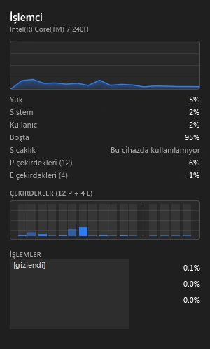

Bir bakışta canlı değerler
İşlemci, GPU, bellek, disk, ağ, pil ve sıcaklık göstergelerinden istediklerini görev çubuğuna koy. Sensör desteği donanıma göre değişir; şu anki imzasız sürüm işlemci sıcaklığını göstermez.
İşlemci, bellek, disk, ağ ve daha fazlası. Sisteminin ne yaptığını görmek için pencere değiştirmen gerekmez.

01 / NASIL ÇALIŞIR?
İşlemci, GPU, bellek, disk, ağ, pil ve sıcaklık göstergelerinden istediklerini görev çubuğuna koy. Sensör desteği donanıma göre değişir; şu anki imzasız sürüm işlemci sıcaklığını göstermez.
Grafik geçmişini ve en çok kaynak kullanan işlemleri aç. Halka ya da grafik görünümü seç, bileşenleri sürükleyerek sırala.
İstersen desteklenen yerel model oturumlarında tepe kaynak kullanımını kaydet. Salt okunur MCP bağlantısı da isteğe bağlıdır.
02 / KURULUM
WindowsStats.exe’yi kurmadan çalıştırabilir veya Kur.cmd ile kendi kullanıcı hesabına kurabilirsin. Mevcut paket imzasız; Windows uyarı gösterebilir.
03 / İLK ÇALIŞTIRMA
Windows 10 veya 11, x64. GitHub’daki sürüm paketini bir klasöre çıkar.
Taşınabilir kullanım için WindowsStats.exe’yi aç; kalıcı kullanım için Kur.cmd’yi seç.
Görev çubuğundaki göstergelere sağ tıklayıp Ayarlar’ı aç; kullanmadığın göstergeleri kapat.
Hayır. Oturum takibi ve MCP isteğe bağlıdır. MCP’yi bir bulut modeliyle kullanırsan seçili araç sonuçları model sağlayıcısına gidebilir.
Mevcut paket dijital olarak imzalanmamıştır. Dosyayı yalnızca resmî GitHub sürümünden indir; kaynak kodu ve sürüm notları orada.
Windows gömmeye izin vermezse şerit görev çubuğunun üzerinde yüzen görünüme geçebilir. Windows 11’de görev düğmelerini kapatmamak için yer kalmadığında en sondaki göstergeler gizlenebilir.